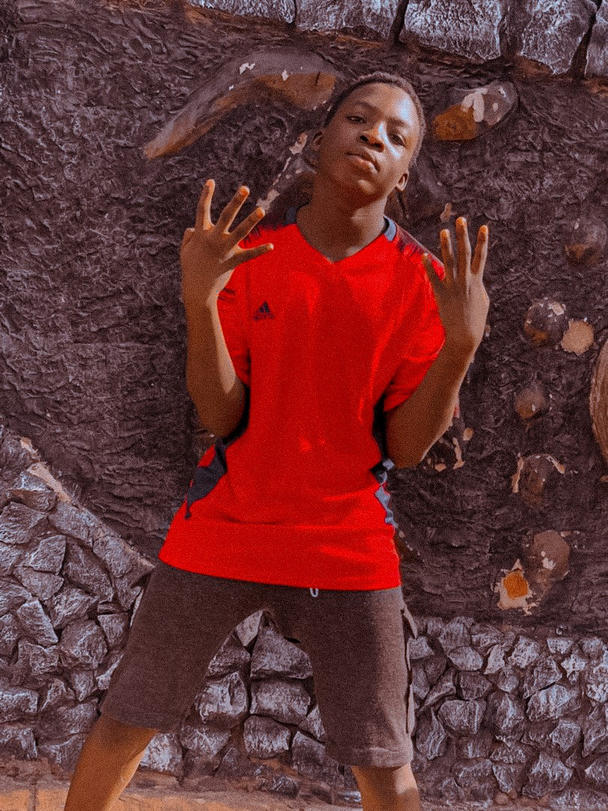

bachelor of science in marketing
university of california,Los angeles-2017
work experience
Digital marketing manager
xyz Corp| san frasico,Ca,2015
marketing coordinator
ABC Inc.| los angeles,Ca
july 2017-may 2020
skills
SEO and SEM
social media strategy(facebook,instagram,twitter)
google anaylytics and ADWords
content creaion and management
Budget management
Awards
Marketing campaign of the year
(2021)-XYz Corp.
Employee of the month(october 2019)

pic of me...i be werey seh
hobbies
love playing video games
love trolling losers like you
i like to dey watch tik tok like werey too
Summary
results-driven marketing professional with 5+years of experience in digital marketing,
brand management,and campaign strategy.proven success in increasing brand awareness and driving online
traffic through targeted content and social media strategies.adept at managing multi-channel campaigns and leveraging
data analytics to optimize performance.